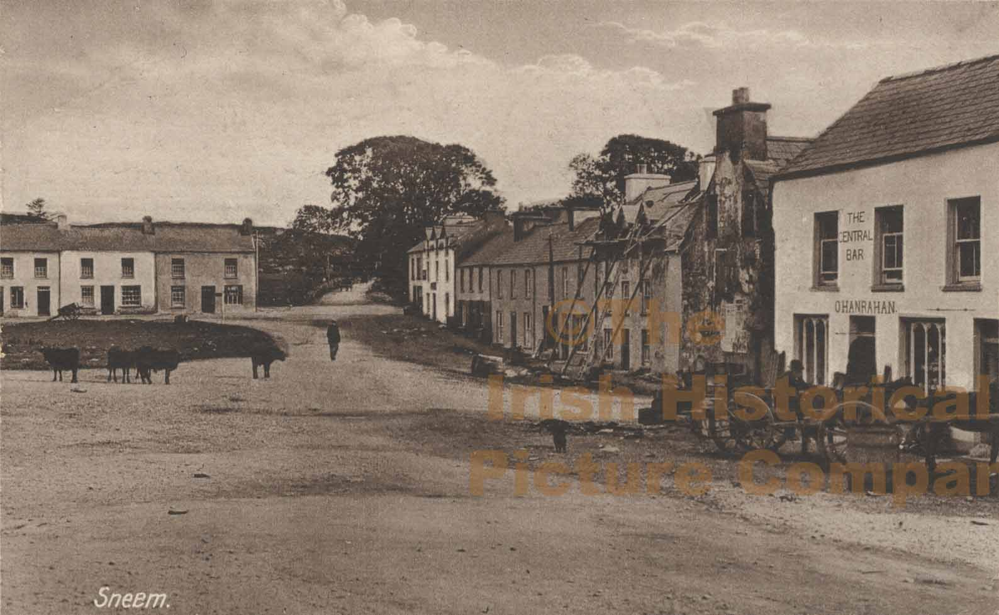
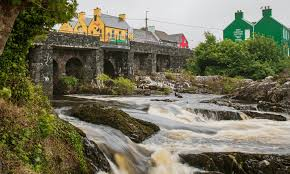
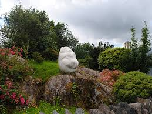
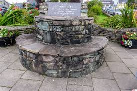

- The village is estimated to have been established around 1750
- The Sneem Bridge was built around 1870-1890
- In 1969 Former President of France Charles de Gaulle visited the village
- The 'Peaceful Panda' statue was donated bu the peoples republic of China in 1986
- Sneem won a gold medal in the Tidy Towns in 1987 and 2016
- In the year 2000 a time capsule was buried in the middle of the town to be opened in 2100



